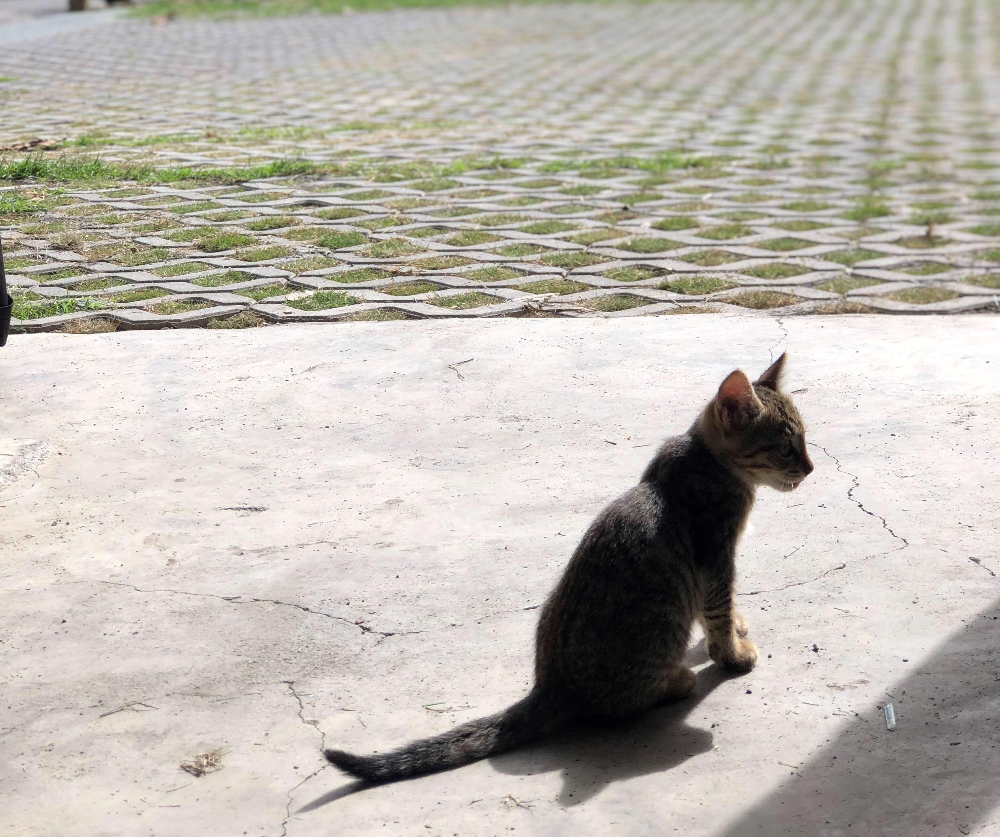

流浪動物問題，我們認識多少？
流浪貓狗的一生、TNVR入法、零撲殺、人犬衝突、餵養、貓狗大戰等，該如何更全面地去探討流浪動物現況與問題，
激發出不同的討論與思辨，進而改善台灣流浪動物問題，是我們期望做到的。
世界公認解決流浪動物問題的「黃金三原則」

動物保護法

立法宗旨
為尊重動物生命及保護動物，特制定此法。
保護對象
指犬、貓及其他人為飼養或管領之脊椎動物，包括經濟 動物、 實驗動物、寵物及其他動物。
涵蓋內容
明定飼主應盡的責任及違反後的罰則，並對於動物的基 本福祉進行基本規定。
為什麼要幫貓狗絕育?

為犬貓絕育，不僅是以人道的方式減少流浪動物的來源，還能減少犬貓罹患生殖系統疾病及部分癌症的風險。
- 斷絕發情的源頭 母犬貓發情後，公犬貓嗅到母犬貓發情的費洛蒙，進而引起公犬貓發情。母犬貓費洛蒙能飄散很遠，所以儘管當地公犬貓都絕育了，只要母犬貓還會發情，依然會有外地公犬貓聞「香」而來。因此透過絕育，能阻斷發情的源頭
- 減少衝突的產生 母犬貓稱產後因護幼行為造成許多人犬衝突，所以幫牠們絕育，不僅終止流浪的延續，也可以減少衝突的情況
- 減少罹患疾病的可能 公犬貓經絕育手術可避免老年攝護腺肥大及圍肛腺瘤；母犬貓則易發生的子宮蓄膿乳腺瘤等疾病。犬貓能透過絕育避免這類疾病。歐美文獻都認為犬貓絕育可降低罹患乳癌等生殖系統癌症的機會。
動物保護教育
「動物保護教育」是以動物權和動物福利等觀念為基礎的教育。在西方社會，無論是在哲理思辨、法律規範、或是社會與自然科學的領域中，動物權與動物福利本身都已是不可忽略的「教育素材」。
動保處每年都與動保團體合作辦理校園巡迴教育宣導，從幼兒園到大專院校，依據不同年齡層的學生設計教材內容，利用朝會或課堂時間，為校園學習添加動物保護的元素。孩童遇見寵物的第一印象往往是覺得可愛而吵著要飼養，忽略了寵物的生老病死都需要陪伴與照顧，透過校園巡迴宣導的方式，能將正確的動保觀念散播到各個學校中，讓學生們理解和動物相處之道，踏出友善的第一步，並在飼養寵物前就能學習如何成為負責任的好飼主，減少未來飼養不當的情形發生。
「動物保護暨狂犬病防疫校園巡迴教育宣導」以幼兒園至大專院校的學生為對象，並針對不同年齡層因材施教，讓學生們能夠用和自身年齡最相符的方式吸收動物保護觀念，有趣又實用的教學內容每年皆吸引許多學校爭相報名。

聯絡資訊
浪愛之家
電話：04-22873181
地址：台中市南區興大路145號
電子郵件：sarah012708@gmail.com